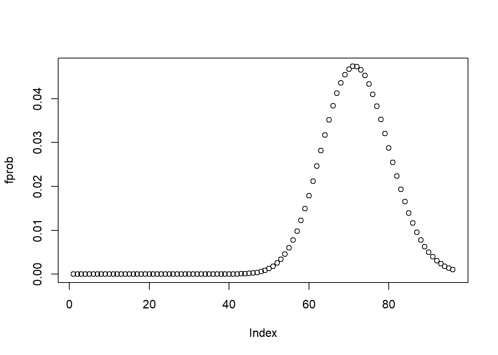

Conduza um teste de hipóteses por simulação para avaliar a hipótese nula de que a média do número de sucessos obtidos pela rota ‘Disappointment Cleaver’ é igual a média das demais rotas (conjuntamente).
tab2 <- dados %>%filter(Rota =='Disappointment Cleaver')mu1 <-mean(tab2$Sucessos)tab3 <- dados %>%filter(Rota !='Disappointment Cleaver')mu2 <-mean(tab3$Sucessos)diff <- mu1-mu2tab4 <-data.frame(mu1,mu2,diff)kable(tab4,align='l')
Análitica das Médias
mu1
mu2
diff
20.48876
4.170139
16.31863
Considerando o Súmario de Sucesso, observa-se uma média de em torno de 10.4 sucessos em todas as rotas avaliadas, assim o valor da diferença 16.32 pode ser considerado alto, indicando a possível diferença de médias.
Realizando uma simulação com \(n=10.000\), tem-se que:
otherR <- dados %>%filter(Rota !='Disappointment Cleaver') %>%select(Sucessos)DCR <- dados %>%filter(Rota =='Disappointment Cleaver') %>%select(Sucessos)n <-10000diff2 <-numeric(n)for (i in1:n){ mu11 <-sample(DCR$Sucessos,size=10,replace=T) mu22 <-sample(otherR$Sucessos,size=10,replace=T) mu11 <-mean(mu11) mu22 <-mean(mu22) diff2[i] <-abs(mu11 - mu22)}kable(tidy(summary(diff2)),align='l')
Verificando um intervalo [0,95] (min-max sucessos), tem-se que:
x <-0:95pr <- (estim2[1]+estim2[2])*15lambda<-as.numeric(exp(pr))fprob <-dpois(x, lambda)plot(fprob)

Distribuição de Probabilidade de Sucessos quando Temperatura é 15º C
Item D
Construa um intervalo de confiança de 95% para \(\exp(\beta)\) a partir do método de bootstrap paramétrico. Interprete o resultado considerando o contexto dos dados.
Dica: calcule o aumento percentual da média esperada quando a temperatura aumenta em 1 grau Celsio.
Faça um diagnóstico do modelo via simulação. Para tanto, gere dados sintéticos usando o modelo obtido no item b, ajuste um novo modelo sobre os dados sintéticos e calcule o Erro quadrático médio (MSE). Repita esse procedimento 10000 vezes e compare os MSEs gerados com aquele do modelo obtido em b. Comente os resultados.
Respostas
Com fins de otimização, a simulação foi realizada no Item D, mas apenas com 1000 repetições por limitações de hardware e tempo de execução.